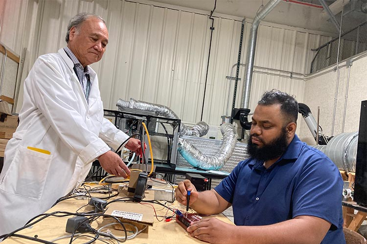
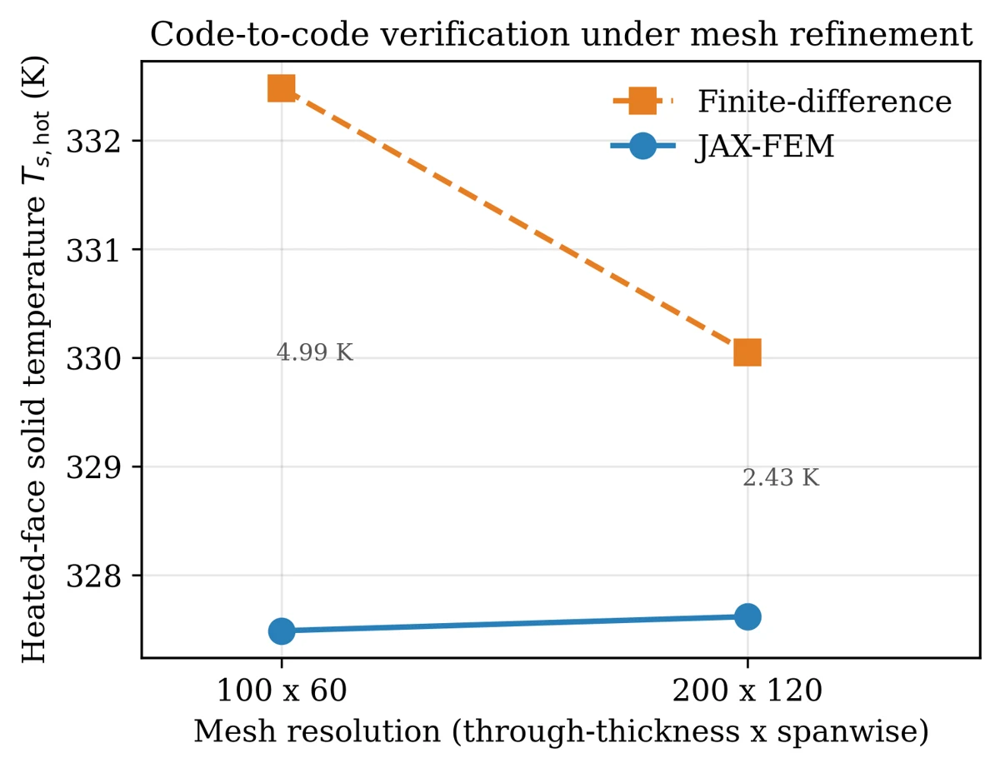
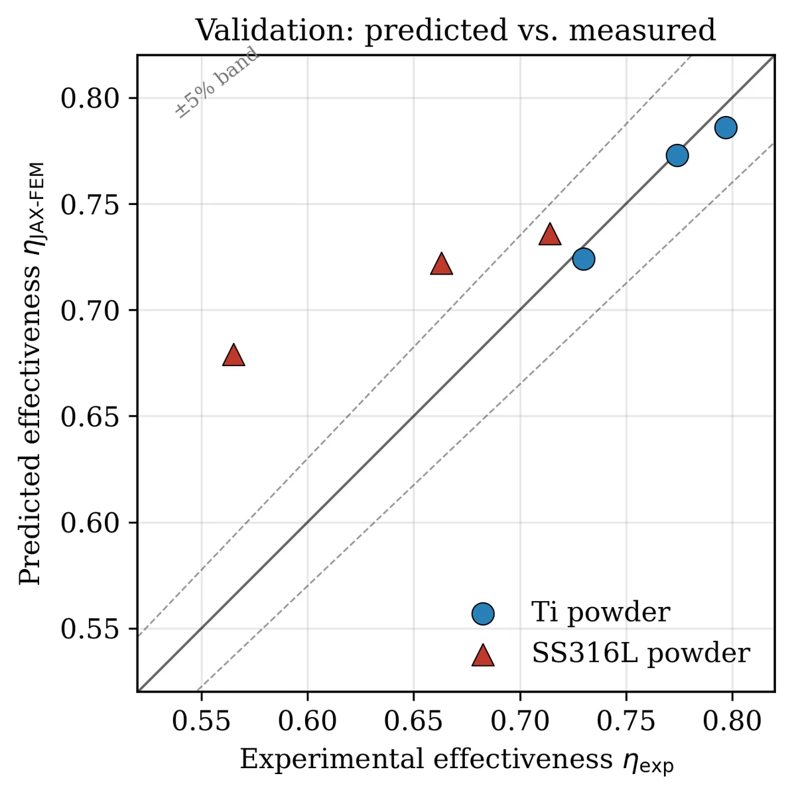
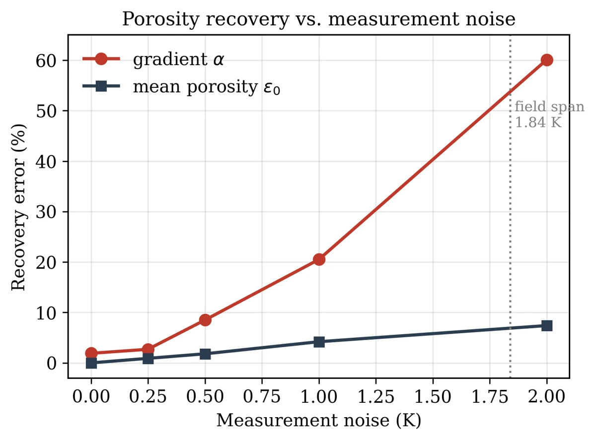

Current work
Models that a controller can trust, tested on hardware
Two platforms carry the porous-media work forward: a liquid-cooling test vehicle for the Catalyst project, and a rotating rig for transpiration cooling inside a spinning turbine-blade channel. Below them is the NSF CIBERCATSS inverse model, which reads a porous wall’s structure from its temperatures.
Data-center thermal test vehicle Hardware validation in progress
Schematic drawn from the project description, not the as-built rig.

- A physics-informed neural-network surrogate of the loop, written in Python and trained on 10,000 simulated operating points, with four control and monitoring functions and a Streamlit dashboard. It will be checked against the hardware before it is trusted for control.
- Planned comparison: physics-based versus learned controllers on pumping energy and heat-source temperature, against a conventional feedback baseline.
- Additively manufactured porous copper cold-plate cartridges (simple-cubic lattice, 60% porosity) with matching permeability test coupons. Trial parts are being sourced.
- Wrote the rig's safety, calibration and maintenance procedures.
Rotating transpiration-cooling rig Design stage
Design schematic, not to scale. No transpiration tests have been run on this rig yet.
The lab's rotating two-pass channel models the mid-chord cooling passage of a turbine blade, but its solid heated wall cannot pass coolant. The redesign replaces that wall with a porous titanium plate heated without contact, catches all the air that passes through it in a sealed hood, and measures pressure drop and blowing ratio while spinning.
The aim is first data on how Coriolis and buoyancy effects change transpiration cooling in a rotating channel. We found no such rig in the papers we reviewed. The data will also test the LTNE solvers.
Summer 2026 · NSF CIBERCATSS
Reading a porous wall's structure from its temperatures
Mentor: Dr. Tian Zhao. Every transpiration-cooling model I had used treated the porous plate as uniform, but real sintered plates are not. The question: can a differentiable finite-element model work backward from temperature data to find how porosity changes through the plate? Paper in preparation
What I built
- A 2-D local thermal non-equilibrium (LTNE) Darcy–Forchheimer model in JAX-FEM: coolant and solid energy equations in one coupled kernel, with the coolant advection term written directly.
- Newton solve with the Jacobian from automatic differentiation, so no hand-derived linearization.
- Porosity stored as a field at the quadrature points, so the solver returns exact gradients of any output with respect to the local porosity.
- An inverse loop: loss between computed and measured temperatures, gradients through the solve (adjoint method), and an Adam optimizer.
Verification against an independent solver
Compared with my finite-difference LTNE solver on the same inputs, the two codes agree within 0.7% on a fine mesh.
Show the numbers
Inputs: SS316L powder, Re = 62,000, heated-face flux 38.3 kW/m². Mean heated-face solid temperature:
| Mesh (thickness × span) | Finite-difference · JAX-FEM · gap |
|---|---|
| 100 × 60 | 332.48 K · 327.49 K · 4.99 K |
| 200 × 120 | 330.05 K · 327.62 K · 2.43 K (0.7%) |
Refining the JAX-FEM mesh moved its answer by 0.13 K. The finite-difference result moved toward it, so the gap came from first-order upwinding in the older solver.

Validation against my experiments
Cooling effectiveness compared point by point with the sintered-powder tests, Re ≈ 38,000–70,000. Injection velocity came from the measured pressure drop.
- Titanium powder: within 1.4% at all three Reynolds numbers.
- SS316L powder: 3.0% at Re = 67,000, but the model over-predicts cooling by 20.1% at Re = 38,000. The error grows as flow drops, which fits uneven coolant spread that a uniform-injection model cannot capture.
- Woven-mesh plates left out of validation: their permeability was not measured, and the uniform estimate over-predicted their cooling by 12–27%.

Recovering a graded porosity Synthetic data
Twin experiment: impose a known profile ε(z) = ε₀(1 + αz/L) with ε₀ = 0.40 and α = 0.50, generate temperatures, add noise, then recover both numbers starting from a wrong uniform guess (ε₀ = 0.35, α = 0).
| What the model sees | ε₀ (true 0.40) · α (true 0.50) |
|---|---|
| Full temperature field | 0.400 · 0.510 |
| One mean heated-face temperature | 0.433 · 0.102 |
One averaged reading cannot pin down a gradient. My current experiments give averaged readings, so this limit applies to them.
Show the noise study
| Noise (K) | ε₀ error · α error (5 runs each) |
|---|---|
| 0.25 | 0.9% · 2.7% |
| 0.50 | 1.8% · 8.5% |
| 1.00 | 4.2% · 20.5% |
| 2.00 | 7.4% · 60.1% |

What it showed
- Porosity can be read from temperature. Permeability cannot. With the coolant flow prescribed, permeability sits only in the momentum balance, not in the energy equations. Recovering it needs pressure-drop data.
- Mean porosity is robust; its gradient is fragile. The gradient needs a full temperature field with noise below about 0.5 K.
- The limit is now the measurement, not the method. The next step needs spatially resolved surface temperature, for example infrared thermography of the heated face.
Status
| Forward model, verified | Done |
|---|---|
| Validation on powder plates | Done |
| Graded-porosity inversion | Shown on synthetic data |
| Inversion from measured IR data | Planned |
| GPU design of graded plates | Planned |
Not yet applied to measured data. These results also shaped the drafted NSF CBET proposal on transient tests read through differentiable inverse models.